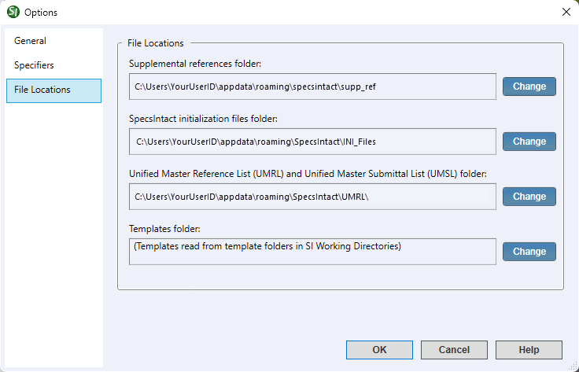

This command can also be executed by using the keyboard shortcut F2.
The File Locations tab provides functionality to customize and manage the location of the Supplemental Reference ListA custom file maintained by the user to include reference standards not found in the UFGS Master guide specifications, Initialization FilesA system file that contains configuration information. These files are used by SpecsIntact and Windows to save information about your preferences and operating environment, the Unified Master Reference List (UMRL)A list of all referenced standards cited in the Unified Facilities Guide Specifications (UFGS) Master. It is used to generate Reference Articles when performing Master text processing functions. The UMRL is also used by the SI Explorers Reference Wizard and Reference Checking features, and the Unified Master Submittal List (UMSL)A list of all referenced submittals cited in the Unified Facilities Guide Specifications (UFGS) Master. It is used to generate Submittal Articles when performing Master text processing functions. The UMSL is also used by the SI Explorers Submittal Wizard and Submittal Checking features. The default location of these files is the user's AppData folder. This helps avoid issues if user permissions are restricted.
 Before making changes to the location of the Supplemental Reference List, it's always recommended to create a backup first. You can do this easily by going to the File menu > Backup and Restore. If you choose to relocate any of these files, make sure they are within a writable area on the user's system, such as C:\Users\YourUserID\Documents.
Before making changes to the location of the Supplemental Reference List, it's always recommended to create a backup first. You can do this easily by going to the File menu > Backup and Restore. If you choose to relocate any of these files, make sure they are within a writable area on the user's system, such as C:\Users\YourUserID\Documents.
 Transferring these files to a shared network is not recommended, as individual user actions would result in overwriting the existing files.
Transferring these files to a shared network is not recommended, as individual user actions would result in overwriting the existing files.
 Click the tabbed commands on the image below to see how to use each function.
Click the tabbed commands on the image below to see how to use each function.

- File Locations - Offers options for relocating the system-generated files. This functionality ensures greater flexibility in managing project-related files and folder locations for organizational consistency with specific user or project requirements.
- Supplemental references folder - Displays its current default location and offers an option to relocate the folder. This folder is the primary location for the Supplemental Reference List and the Supplemental Address List.
- SpecsIntact initialization files folder - Displays the default location of the system-generated Initialization (.ini) files and offers the flexibility to relocate the folder and its files. This folder is the repository for vital application settings, specifically containing the document.ini, other.ini, section.ini, and specsgml.ini files.
- Unified Master Reference List (UMRL) and Unified Master Submittal List (UMSL) folder - Displays the default location and offers an option to relocate the folder. This folder is the primary location for the Unified Master Reference List (UMRL) and Unified Master Submittal List (UMSL) files that are essential to using the tools and functionality in the SI Editor.
- Templates folder - Displays a note that the templates are read directly from the Working Directories' Templates folder, and provides the option to relocate the folder to a location outside of the Working Directories. This helps prevent having multiple copies within each Working Directory. For consistency, if you elect to relocate these files, it is recommended to select the Template folder in the Windows AppData folder (C:\Users\YourUserID\AppData\Roaming\SpecsIntact).
- Change button - Opens the Windows File Explorer to navigate and select a different location for your files and folders.
Standard Windows Commands
 The OK button will execute and save the selections made.
The OK button will execute and save the selections made.
 The Cancel button will close the window without recording any selections or changes entered.
The Cancel button will close the window without recording any selections or changes entered.
 The Help button will open the Help Topic for this window.
The Help button will open the Help Topic for this window.
How To Use This Feature
To Change The File Location:
- In the SpecsIntact Explorer, select the Setup menu and select Options, then select the File Locations tab
- In the File Locations tab, locate the files and folders to relocate, then click the Change button (e.g., Supplemental Reference File, SpecsIntact initialization files, UMRL/UMSL, or Templates)
- When the Windows File Explorer opens, navigate and select the new location
- Click the Select Folder button
- Click OK
Users are encouraged to visit the SpecsIntact Website's Support & Help Center for access to all of our User Tools, including Web-Based Help (containing Troubleshooting, Frequently Asked Questions (FAQs), Technical Notes, and Known Problems), eLearning Modules (video tutorials), and printable Guides.